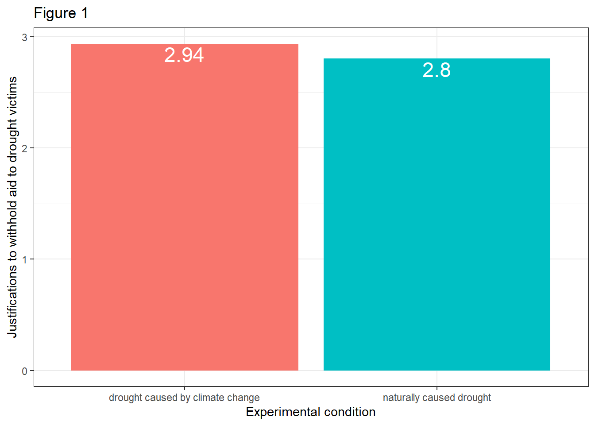
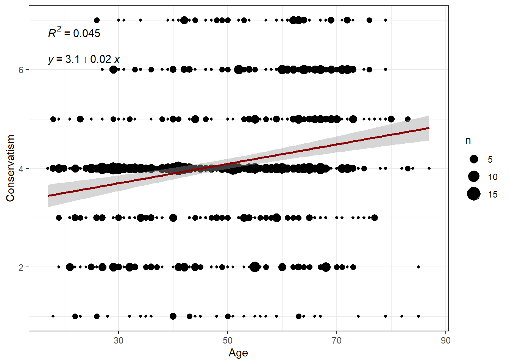

Solutions for Exercise 6
In this Exercise, we will work with the disaster datatset. It’s a data set of a communication science experiment that was conducted by Chapman and Lickel in 2016 and comes pre-installed with processR. The data set contains 211 observations of 5 variables and investigates how framing of climate change disasters affects justifications for giving or withholding aid to disaster victims. There are three variables of interest to us in this data set:
frame: article was framed as a naturally caused disaster (0) or article was framed as a climate change caused disaster (1)
skeptic: climate change skepticism, higher scores indicate greater skepticism about the reality of climate change (scale: 1-9)
justify: strength of a participant’s justifications for withholding aid, higher scores indicate a stronger sense that helping out the victims is not justified (scale: 1-7)
Let’s load processR and save the disaster data to a source object called data:
# installing/loading the package:
if(!require(processR)) {
install.packages("processR");
require(processR)
} #load / install+load processR
data <- processR::disasterThe framing theory suggests that the way a topic is presented to the audience (referred to as “frame”) affects how individuals interpret that information and thus evaluate the topic.
Research Question: Does framing a disaster as caused by climate change, rather than leaving the cause undetermined, affect people’s justification for not helping, and does this framing effect depend on people’s skepticism about climate change?
16.6.8 Task 1
What variables are X, Y, and W in this scenario? Write it down.
X = frame:; article was framed as a naturally caused disaster (0) or article was framed as a climate change caused disaster (0)
Y = justify; strength of a participant’s justifications for withholding aid to drought victims, higher scores indicate a stronger sense that helping out the victims is not justified (scale: 1-7)
W = skeptic; climate change skepticism, higher scores indicate greater skepticism about the reality of climate change (scale: 1-9)
16.6.9 Task 2
Investigate the relationship between X and Y with a plot. Next, make a visual check if this effect depends on different levels of W. Finally, evaluate the figures.
There are many options to visualize the effects and a lot of these approaches are covered in [Moderation Analysis]. Here, we’ll use bar charts.
- The effect of X on Y:
data %>%
mutate(frame = case_when(
frame == 0 ~ "naturally caused drought",
frame == 1 ~ "drought caused by climate change")) %>%
ggplot(aes(x=frame, y=justify)) +
stat_summary(aes(fill = frame), fun=mean, geom="bar") +
stat_summary(aes(label=round(..y..,2)), fun=mean, geom="text", size=6,
vjust = 1.2, color = "white") +
theme_bw() +
theme(legend.position = "none") +
labs(x="Experimental condition", y="Justifications to withhold aid to drought victims", title="Figure 1")
- The effect of X on Y on different levels of W:
data %>%
mutate(frame = case_when(
frame == 0 ~ "naturally caused drought",
frame == 1 ~ "drought caused by climate change")) %>%
mutate(skeptic_fct = case_when(
skeptic >= 6.0 ~ "high skepticism",
skeptic >= 3.0 ~ "medium skepticism",
skeptic < 3.0 ~ "low skepticism")) %>%
mutate(skeptic_fct = factor(skeptic_fct, levels = c("low skepticism","medium skepticism","high skepticism"))) %>%
ggplot(aes(x=frame, y=justify)) +
stat_summary(aes(fill = frame), fun=mean, geom="bar") +
stat_summary(aes(label=round(..y..,2)), fun=mean, geom="text", size=4,
vjust = 1.2, color = "white") +
theme_bw() +
theme(legend.position = "bottom", legend.title=element_blank()) +
theme(axis.text.x=element_blank(),
axis.ticks.x=element_blank()) +
labs(x="Experimental condition:", y="Justifications to withhold aid to drought victims", title="Figure 2") +
facet_wrap(~skeptic_fct)
Evaluation: Figure 1 shows that participants who read a report attributing droughts to climate change indicated a stronger justification for withholding aid (Ȳ = 2.94) than those who did not receive such a reference (Ȳ = 2.80). Figure 2 illustrates that the attribution of cause affects people differently depending on their opinions about the reality of climate change, implying that climate change skepticism moderates the effect of the ascribed cause of the drought. It appears that participants who have lower climate change skepticism scores report weaker justifications for withholding aid when told the drought was caused by climate change compared to when not so told. The opposite is true among people who rate high in climate change skepticism.
16.6.10 Task 3
Run a linear regression model that includes an interaction term of X and M. Note down the regression equation and interpret the coefficients.
summary(lm(justify ~ frame+skeptic+frame*skeptic,data=data))##
## Call:
## lm(formula = justify ~ frame + skeptic + frame * skeptic, data = data)
##
## Residuals:
## Min 1Q Median 3Q Max
## -2.1267 -0.5864 -0.0117 0.5084 2.5484
##
## Coefficients:
## Estimate Std. Error t value Pr(>|t|)
## (Intercept) 2.45153 0.14904 16.449 < 0.0000000000000002 ***
## frame -0.56247 0.21792 -2.581 0.010539 *
## skeptic 0.10508 0.03813 2.756 0.006375 **
## frame:skeptic 0.20118 0.05527 3.640 0.000344 ***
## ---
## Signif. codes: 0 '***' 0.001 '**' 0.01 '*' 0.05 '.' 0.1 ' ' 1
##
## Residual standard error: 0.8129 on 207 degrees of freedom
## Multiple R-squared: 0.2463, Adjusted R-squared: 0.2353
## F-statistic: 22.54 on 3 and 207 DF, p-value: 0.000000000001138Evaluation: The regression equation is Y = i[Y] + b1 * X + b2 * W + b3 * XW, where i[Y] = 2.451, b1 = -0.562, b2 = 0.105, and b3 = 0.201. I.e., Y = 2.451 -0.562 * X + 0.105 * W + 0.201 * XW.
b1 = -0.562 (p < .05) indicates the difference between the group means of those who were told that the drought was caused by climate change and those who were, given that climate change skepticism scores 0 in both groups (W = 0, not a valid value and nonsensical!). You can also say that two participants who differ by one unit on X, but rate 0 on W, are estimated to differ by -0.562 units on Y. That is, participants who rate 0 on climate change skepticism (again: not a valid value and nonsensical!) and were told that the drought was naturally caused are estimated to rate 2.451 on Y (intercept), while participants who rate 0 on climate change skepticism (again: not a valid value and nonsensical!) and were told that the drought was caused by climate change are estimated to rate 1,889 on Y.
b2 = 0.105 (p < .01) indicates the estimated change on Y for two participants who differ by one unit on M, but rate 0 on X. That is, two participants who differ by one unit in their climate change skepticism but were both told that the drought had a natural cause are estimated to be 0.105 units more likely to justify to withhold aid to drought victims.
b3 = 0.201 is statistically different from 0 (p < .001), which means that the effect of framing on justifications to withdraw aid for drought victims depends on people’s skepticism about climate change. Moreover, b3 quantifies how the effect of X on Y changes as W changes by one unit. That is, as climate change skepticism increases by one unit, the difference in strength of justifications between those told climate change was the cause and those not so told “increases” by 0.201 units.
16.6.11 Task 4
Mean-center the climate change skepticism variable and run the model again. How does the interpretation of b1 change?
data$skeptic_mc <- scale(data$skeptic, center=TRUE, scale=FALSE)
summary(lm(justify ~ frame+skeptic_mc+frame*skeptic_mc,data=data))##
## Call:
## lm(formula = justify ~ frame + skeptic_mc + frame * skeptic_mc,
## data = data)
##
## Residuals:
## Min 1Q Median 3Q Max
## -2.1267 -0.5864 -0.0117 0.5084 2.5484
##
## Coefficients:
## Estimate Std. Error t value Pr(>|t|)
## (Intercept) 2.80650 0.07753 36.201 < 0.0000000000000002 ***
## frame 0.11712 0.11206 1.045 0.297156
## skeptic_mc 0.10508 0.03813 2.756 0.006375 **
## frame:skeptic_mc 0.20118 0.05527 3.640 0.000344 ***
## ---
## Signif. codes: 0 '***' 0.001 '**' 0.01 '*' 0.05 '.' 0.1 ' ' 1
##
## Residual standard error: 0.8129 on 207 degrees of freedom
## Multiple R-squared: 0.2463, Adjusted R-squared: 0.2353
## F-statistic: 22.54 on 3 and 207 DF, p-value: 0.000000000001138Evaluation: The reparameterization did change b1 = 0.117 and its meaning. Actually, the conditional effect b1 is not nonsensical anymore! You can now interpret scores of W = 0 as the mean because now W = 0 when W = mean(W) = 3.377. b1 now estimates the difference in strength of justifications for withholding aid between those told climate change caused the drought and those not so told among those with average climate change skepticism. Participants who rate 0, i.e. average, on climate change skepticism and were told that the drought was naturally caused are estimated to rate 2.806 on Y (intercept), while participants who rate 0, i.e. average, on climate change skepticism and were told that the drought was caused by climate change are estimated to rate 2.806 + 0.117 = 2.923 on Y.
16.6.12 Task 5
Probe the interaction.
library(interactions)
intrct_model <- lm(justify ~ frame+skeptic_mc+frame*skeptic_mc,data=data)
sim_slopes(intrct_model, pred=frame, modx=skeptic_mc)## JOHNSON-NEYMAN INTERVAL
##
## When skeptic_mc is OUTSIDE the interval [-2.21, 0.56], the slope of frame
## is p < .05.
##
## Note: The range of observed values of skeptic_mc is [-2.38, 5.62]
##
## SIMPLE SLOPES ANALYSIS
##
## Slope of frame when skeptic_mc = -2.0327907438001187045984 (- 1 SD):
##
## Est. S.E. t val. p
## ------- ------ -------- ------
## -0.29 0.16 -1.84 0.07
##
## Slope of frame when skeptic_mc = 0.0000000000000001557469 (Mean):
##
## Est. S.E. t val. p
## ------ ------ -------- ------
## 0.12 0.11 1.05 0.30
##
## Slope of frame when skeptic_mc = 2.0327907438001187045984 (+ 1 SD):
##
## Est. S.E. t val. p
## ------ ------ -------- ------
## 0.53 0.16 3.32 0.00Evaluation: The results show that framing for participants who score low on climate change skepticism (here: -1 standard deviation from the mean, which is a score of X = -2.032) does not affect the strength of participants’ justifications for withdrawing aid for drought victims (b = -0.29, p = .07). However, the more extreme citizens’ climate change skepticism becomes, the more important the framing of the drought (as natural / climate change induced) becomes in determining how much participants justify withdrawal of aid for drought victims. For citizens that score average climate change skepticism (Mean = 0.000, p = .30), framing does still not affect justifications for withdrawal of aid. However, participants who score high on climate change skepticiism (here: +1 standard deviation from the mean, which is a score of X = +2.032) act differently based on framing of the disaster, i.e. their justification for withdrawal of aid increases (b = 0.53, p < 001).
16.6.13 Task 6
Repeat the analysis using processR (i.e., the process function). Look only at the processR output and note down all the coefficients.
process(data=data, y="justify", x="frame", w="skeptic_mc",model=1,plot=1,seed=123)